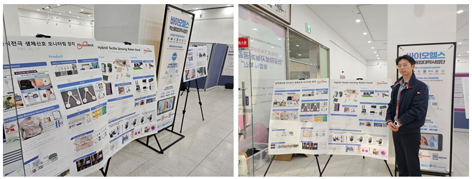
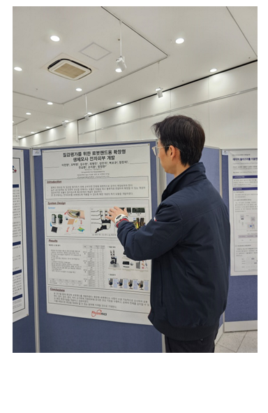
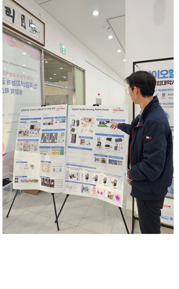

한국감성과학회
추계학술대회에서 촉각센싱 로봇핸드 포스터 발표
안녕하세요 피지오닉스 입니다!
2024.11.22 ~
2024.11.23 일정으로 상명대학교 서울캠퍼스에서 열렸던
한국감성과학회 추계학술대회에서 피지오닉스가 참석하였습니다.
이번 추계학술대회에서는 촉각센싱 로봇핸드 관련하여
포스터 발표가 진행되었는데요,
피지오닉스의 로봇핸드 기술을 많은 관련분야
전문가들께
상세하게 소개해드릴 수 있는
기회의 장이었답니다.
그 현장을 사진으로 여러분께도
소개해 드려요!



피지오닉스에서는 사람 피부 구조를 모사한
촉각센서의 개발을 통해
기존보다 정밀한 조작이 가능한
로봇 핸드 구현에 한발 더 나아가고 있고,
로봇 공학의 새로운 도약을
제시하여
로봇분야는 물론이고 VR/AR과 관련된 기술 발전에도
크게 이바지할 것이라고 기대하고
있습니다.
또한 인간 감성공학과 연계하여
로봇 핸드의 새로운 방향성을
제시하고자 합니다!
피지오닉스는 로봇 핸드의 선두분야로
앞장서는 그날까지
열심히 달려나가겠습니다.
계속해서 많은 관심과 응원
부탁드려요 ~
감사합니다!!
자세한 사항은 아래 전화번호로
문의 가능하며 홈페이지 및 블로그를 참고해주세요~
Tel)
042-867-7880